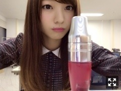
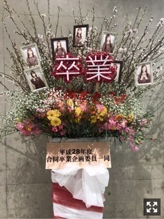
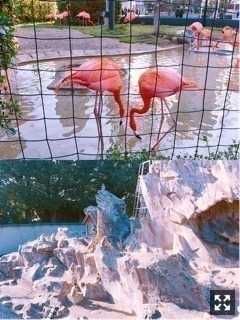
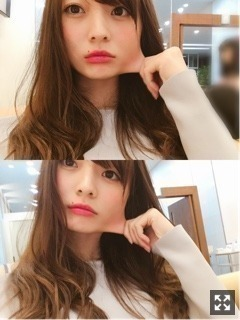
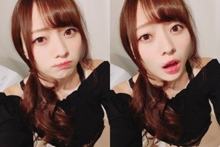

あの隅っこ。梅澤美波
みなさまこんにちは！！
乃木坂46 ３期生の
梅澤美波です！！
長いです今日も

この日まつ毛の調子が最強に良かったの( .. )
女の子におすすめですこのリップ( ¨̮ )
ランコムさんの、ジューシーシェイカー！！
落ちにくいし、匂いがすごく良くて
とても癒されるし、
サラサラしてる付け心地だから最高にすきで最近はずっとこれを使ってます◎
ちょこちょこコスメとか紹介していけたらいいなあ( ¨̮ )
先日samurai ELOさんの
撮影をさせていただきました！
本当に楽しかった、、
珍しく髪の毛を巻いてもらったり、
いろんな服を着させてもらってり、、
私はお洋服に関わるお仕事がしたいな〜
って改めてすごく思いました！がんばる！
3月24日発売です！
MARQEEさんでは、
いつもと違う、モードな雰囲気で撮ってもらいました！
似合うかな〜どうかな〜( .. )
こちらは4月10日発売！
よろしくお願い致します！

先日の握手会でマネージャーさんが
写真を送ってくださったお花です。
わたしの写真もあるのです（ ｉ _ ｉ ）
この日の握手会は参加していないのに、
加入させていただいて間もない私なのに、
先輩方と一緒にこうして卒業をお祝いしていただけること
本当に嬉しいです。
本当に嬉しくって幸せ！！
お花大好き（ ｉ _ ｉ ）
ありがとうございます！！（ ｉ _ ｉ ）
この前あやと動物園行きました！！
念願( ¨̮ )
すごい楽しかった！
かっこいいし可愛かった( ¨̮ )

上がフラミンゴで下がお猿！！
記憶上フラミンゴさん見たこと無かったから
予想以上の色の鮮やかさに驚いて
本当に綺麗で見とれちゃいました◎
あやにはツンツンしちゃう( .. )
仲良くなるとツンツンしちゃう
愛情表現です◎（笑）
最近くっついてくると
おえ〜
って言っちゃうけどほんとは嬉しい( ¨̮ )（笑）
ほんとはだいすきだよ〜あや〜（笑）（笑）

顔のびすぎ（笑）（笑）
お肉なくならないかな〜
ももっぴがわたしの画像あげてて
愛されてるな〜って思った( ¨̮ )（笑）
最近一緒にいる率ナンバーワン( ¨̮ )
浮気するなよ〜って言われる( ¨̮ )
可愛いんですよ〜ももこ（笑）
質問返し！！
Q.ニックネームどうなったの？？
A.お待たせしてごめんなさい( .. )
Q.レコーディングでハプニングはあった？
A.ハプニングはないんですが、レコーディングとMV撮影の日が私個人的問題で病み上がりだったので、体調がすごく心配でした( .. )だけど、声もしっかり出たしMVも元気な状態で挑めました！楽しかったな〜◎
Q.宿題は先にやる派？
A.提出日の前日にやる派です（笑）はじめに全部終わらせようって思うんだけどいつの間にか忘れて最終日とかにやってないことに気づく人です（笑）ダメ人間( .. )
おわり( ¨̮ )
三番目の風、MV公開されました！
私も完成は今日初めて見ました( ¨̮ )
私は葉月と２人でペアのシーンがあったのですが
私がカメラを持って葉月を撮影するというシーンで、
本物のめちゃくちゃ重たい
ゴツいカメラを背負ったんです！！
監督さんが、
このシーンが俺が１番好きなシーンなんだ
って言ってくださったから
すごく気合が入ったのを覚えています。
すごく重たいから、カットがかかると
スタッフさんが支えて下さっていたんです（ ｉ _ ｉ ）
カメラマンさんに憧れがあったから
めちゃくちゃ嬉しかったの実は( ¨̮ )
すごく素敵なMVにこうして参加出来て
本当に幸せです。
目立つ場所にはいないけど、
探してみてほしいです
皆さんも気に入ってくださったら
嬉しいなあ( .. )
注目して聞いていただければ
ちゃんと聞こえると思います！ぜひ◎
不安になることもあるけど
応援してくださるファンの皆さんもいるし
自分が正しいと思うことに全力で
頑張っていこうと思います
嫌われることを恐れたら
何も出来ないからね☺︎
もっともっと露出を増やせるように
めちゃくちゃ頑張ります！
何事にも全力で。
自分にしかない魅力とかを見つけたいし
もう自分に生まれたからには
自分で人生生きていくしかないし☺︎
少しでも自分を好きになりたいなあ〜
って言うのが今年の目標( ¨̮ )遅（笑）
目標はちゃんと立ててます！
今はまだ自分の良い所を見い出せないけど
私を好きになってくれる人を
大切にしたい！
って心から思う、ありがとう
いつも重たくなってごめんね〜
12回に一回しかないからどうしても伝えたいことが多くなる！
思うことはたくさんあるけど
どんなときも近くにいてくれる皆さんがだいすきだよ〜！！！
みんなが辛い時も近くにいられる存在になりたいなあ。はやくお話したい！！◎
あやにはツンツンしてるけど
皆様にはデレデレかもね（笑）（笑）
突然思ったことをポツリ( ¨̮ )

下から梅澤（笑）（笑）
服が黒ばっかりで困ってる！！
でもこの前どタイプなお洋服に出会って
２色買いしました( ¨̮ )
誰か一緒にお買い物行こ〜
あ、あと最近食欲とまらないの
コメントたくさんありがとうございます。
握手会取ったよの声、
握手完売おめでとうの声、
三番目の風の感想、
卒業おめでとうの声、
どれも嬉しいことばかり。
もっともっと上を目指して
頑張るね。
早く握手会で皆様とお話したいな〜って
ずっと思ってる！
わくわくしてる！どきどきしてる！
会えるの楽しみ〜
明日、握手会６次応募なので
気になっている方はぜひ( ¨̮ )
楽しもう〜！！
ほんじゃあまたねっ
まだ寒いから油断して薄着だめだよ〜
今日の寒さ大好き( ¨̮ )
おやすみ
見つけてもらえるように頑張ります
今こそこの身長活かすときかなって
見にくい場所でごめんね
どこにいてもずっと見ててほしい
Original：https://www.nogizaka46.com/s/n46/diary/detail/37411?ima=0531&cd=MEMBER